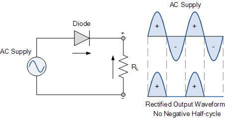
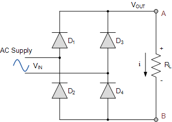
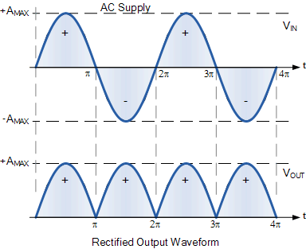
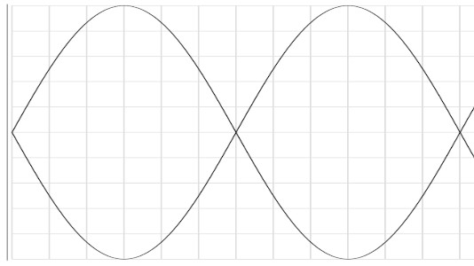
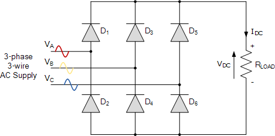
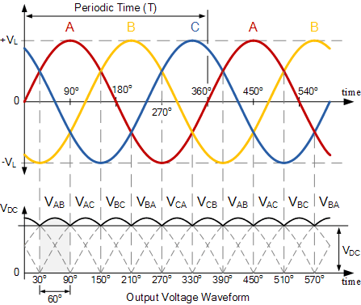

class: center, middle # EE-361 # Introduction to AC/DC Converters (Rectifiers) ## Ozan Keysan [keysan.me](http://keysan.me) Office: C-113 <span class="meta">•</span> Tel: 210 7586 --- # Rectifiers (AC/DC) Converters <img src="./images/ee463/rectifier_block.png" alt="Drawing" style="width: 800px;"/> --- # Single-Phase Diode Rectifier <img src="https://static2.semikron-danfoss.com/typo3temp/product_images/SEMIKRON_skb-25-0723869007238680072387000723871007238720072387300723874007238750_picture.jpg" alt="Drawing" style="width: 300px;"/> <img src="https://ce8dc832c.cloudimg.io/v7/_cdn_/95/D5/80/00/0/548185_1.jpg?width=640&height=480&wat=1&wat_url=_tme-wrk_%2Ftme_new.png&wat_scale=100p&ci_sign=39ea0eee26ca2db6520b924d42487780a5834bfb" alt="Drawing" style="width: 400px;"/> #### Commercial Bridge Rectifiers --- # Single Phase Half-Wave Rectifier  ### [More info](https://www.electronics-tutorials.ws/power/single-phase-rectification.html) --- # Single Phase Full-Wave Rectifier  ### [More info](https://www.electronics-tutorials.ws/power/single-phase-rectification.html) --- # Single Phase Full-Wave Rectifier  ### Let's calculate the average output DC voltage. --- ## Average output voltage  --- # Single Phase Full Bridge Rectifier ## Average Output Voltage ## \\(V\_{DC}= \dfrac{2\sqrt{2} V\_{ph(rms)}}{\pi} = 0.9 V\_{ph(rms)}\\) -- ### For 230V AC voltage, \\(V\_{DC}=207V\\) --- # Three Phase Full-Wave (Bridge) Rectifier  ### [More info](https://www.electronics-tutorials.ws/power/three-phase-rectification.html) --- # Three Phase Full-Wave (Bridge) Rectifier  ### Output voltage jumps between line-to-line voltages, whichever has the maximum magnitude --- ## 3-Phase Full Wave (Bridge) Rectifier ### Six possible line-to-line voltages <img src="./images/ee463/3phase_full.png" alt="Drawing" style="width: 500px;"/> ### Output voltage jumps between line-to-line voltages, whichever has the maximum magnitude --- ## 3-Phase Full Wave (Bridge) Rectifier ### Average Output Voltage? --- ## 3-Phase Full Wave (Bridge) Rectifier ### Average Output Voltage? ### \\(V\_{DC}= \dfrac{3\sqrt{2} V\_{l-l(rms)}}{\pi} = 1.35 V\_{l-l(rms)}\\) -- ### For 230V AC voltage (i.e. 400 V(l-l): ### \\(V\_{DC}=540 V\\) --- # Extra Material for Curious Students - ### [Diode Rectifier Online Simulation-1](https://www.plexim.com/academy/power-electronics/diode-rect-ind-load) - ### [Diode Rectifier Online Simulation-2](https://www.plexim.com/academy/power-electronics/diode-rect-cap-load) - ### [3-Phase Diode Rectifier Online Simulation](https://www.plexim.com/academy/power-electronics/diode-rect-ind-load-3ph) - ### [EE463 Power Electronics Slides](http://keysan.me/ee463/) - ### [Introduction to Power Electronics Videos](https://www.youtube.com/playlist?list=PLmK1EnKxphikP6c9Yc9kGYO0kvrbEoWN8) --- ## You can download this presentation from: [keysan.me/ee361](http://keysan.me/ee361)